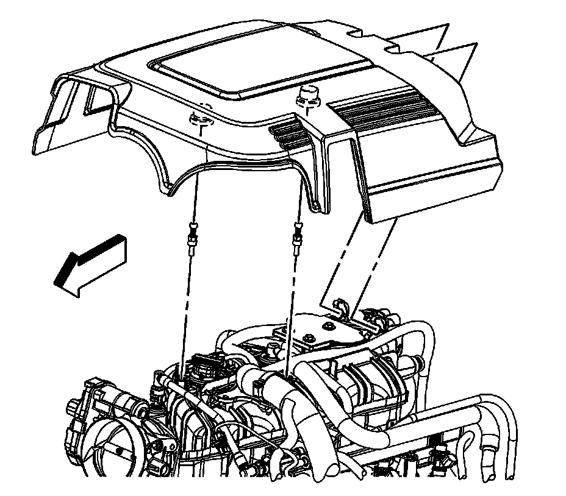
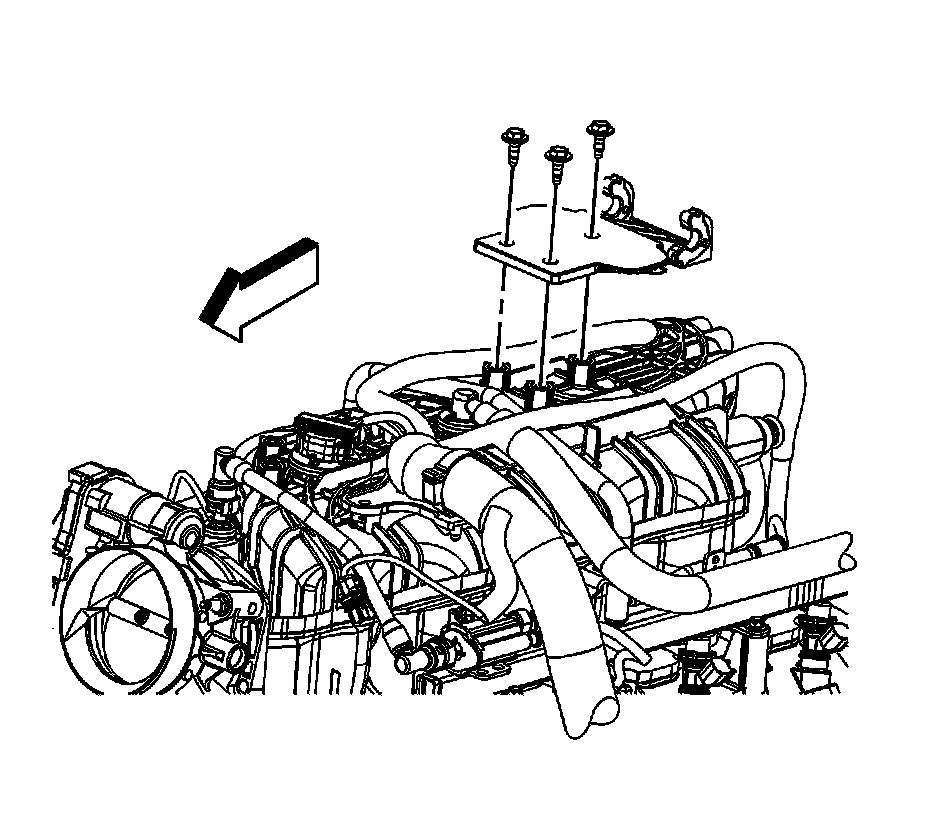

Upper Intake Manifold Sight Shield Replacement
Upper Intake Manifold Sight Shield Replacement
Removal Procedure

1. Open the hood.
2. Grasp the front of the intake manifold sight shield and lift up disengaging the grommets from the studs.
3. Remove the intake manifold sight shield from the retainer slots.

4. Remove the intake manifold sight shield retainer bolts and retainer, if required.
Installation Procedure
1. Position the intake manifold sight shield on top of the intake manifold, aligning the holes, if required.
Notice: Refer to Fastener Notice.
2. Install the intake manifold sight shield retainer bolts, if required.
Tighten the bolts to 5 N.m (44 lb in).
3. Install the intake manifold sight shield tabs into the slots in the retainer.
4. Align the intake manifold sight shield grommets with the studs.
5. Gently push down on the intake manifold sight shield over the grommets, seating the intake manifold sight shield.
6. Close the hood.